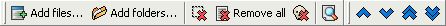

Files page
This page displays the list of the files that will be renamed.
The toolbar icons used to add and remove files from the list is always displayed, even when the Files page is not active.

Here are the commands:
 "Add files" button displays a standard Windows dialog where you can select the files to add,
see this page for additional details.
"Add files" button displays a standard Windows dialog where you can select the files to add,
see this page for additional details. "Add folders" button displays a folder-selection window, that allows to add files and
folders as described on this page.
"Add folders" button displays a folder-selection window, that allows to add files and
folders as described on this page.- "Remove selected files" button removes from the list the files that are selected.
- "Remove all files" button clears the files list.
- "Remove dead files" button removes from the list the files that do not exist anymore on
the disk (missing files). That can happen if, for example, after renaming process you moved some files with Windows Explorer.
- "Refresh preview" button refreshes the contents of the "Preview" column (and displays it if it
is not already visible). This preview is not automatically for performance purposes.
When you click with right mouse button on the headers of the list, a menu appears allowing to select which column has to be displayed or not from the
following : Folder, Filename, Full path, Ext. (Extension), Preview, Size, Date created, Date modified.
There are also four buttons allowing to move items within the list, to change the renaming order. You can also drag & drop items within the list
to change their order. This order can also be changed by sorting the files by clicking on column headers.
To disable this automatic sort, you can click with right mouse button on the headers of the list and select the "Unsorted items" command.
The headers can be resized and moved to change width and order of the columns.
When you click with right mouse button on the list, a menu appears allowing (among other things) to select all items of the list.